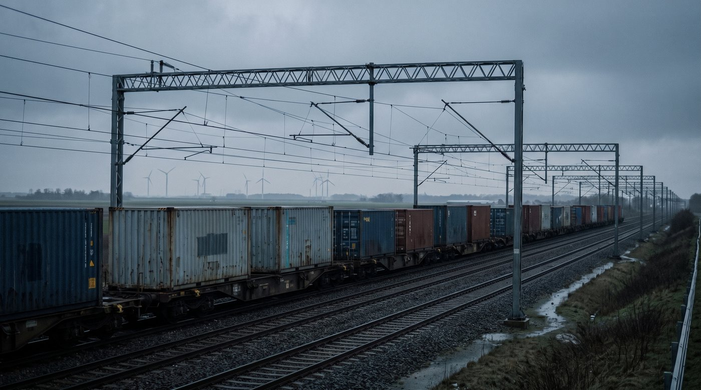

Ce que nous faisons réellement
Six services. Prenez la partie maritime seule si c’est tout ce qu’il vous faut, ou confiez-nous le transport au complet et recevez une seule facture au bout.
Service 01
Transport maritime
Un départ hebdomadaire à jour fixe dans chaque sens, sur une allocation d’espace contractuelle auprès de transporteurs qui font déjà l’Atlantique Nord.
Vers l’est, le navire quitte Halifax le vendredi et atteint Bremerhaven en neuf jours environ, Rotterdam en onze. Vers l’ouest, départ de Rotterdam le mardi, environ douze jours. Comme l’allocation est contractuelle et non achetée semaine après semaine, votre espace survit à la haute saison, quand c’est la marchandise au comptant qui se fait reporter.
- Conteneur complet
- 20 pi, 40 pi, high cube
- Conteneur partagé
- À partir d’une palette
- Réfrigéré
- À chaque départ
- Toit ouvert et plateau
- Sur demande
- Marchandises dangereuses
- La plupart des classes
- Durée
- Environ 9 jours jusqu’à Bremerhaven


Service 02
Douanes et tarifs
À l’interne du côté canadien et à Bremerhaven. Pour les envois qui entrent par les Pays-Bas, nous travaillons avec un partenaire agréé à Rotterdam.
Les droits sur un envoi mal classé peuvent atteindre plusieurs fois le montant du fret, et cela refait surface des mois après la livraison. Le classement se fait donc avant la première réservation. Nous vérifions la marchandise au regard des règles d’origine de l’AECG, préparons la déclaration et conservons les pièces pendant les six ans exigés par la loi canadienne.
Du côté allemand, nous déclarons par voie électronique dans ATLAS. Il vous faut un numéro EORI ; si vous n’en avez pas, nous le mettons en place. La taxe allemande à l’importation est de 19 pour cent, ou 7 pour cent à taux réduit, et elle se déduit comme taxe sur les intrants pour la période où elle a été payée.
- Classement tarifaire, et demandes de décision anticipée quand la réponse est réellement discutable
- Analyse de l’origine selon les règles propres à chaque produit
- Déclarations d’importation et d’exportation au Canada, en Allemagne et aux Pays-Bas
- Report de la taxe par licence d’article 23 et représentation fiscale, à l’entrée néerlandaise
- Valeur en douane, y compris redevances et apports
- Circulation sous douane et report des droits
- Accompagnement en vérification, divulgation volontaire et appel
Service 03
Entrepôt sous douane
De l’espace sous douane à Dartmouth et à Bremerhaven, de sorte que les droits et la taxe à l’importation ne deviennent exigibles qu’au moment de la mise en libre pratique.
Si vous gardez une saison en stock, cela revient à financer un mois d’inventaire plutôt qu’une année. Cela transforme aussi une série de lots partiels en économie de conteneur complet, et cela donne le temps de choisir le marché pendant que la situation tarifaire reste instable.
Groupage
Plusieurs fournisseurs réunis dans un conteneur avant le départ.
Entrepôt sous douane
Marchandise sous douane, droits reportés jusqu’à la sortie.
Transbordement direct
Du navire au véhicule sortant, sans entreposage.


Service 04
Transport terrestre
Ramassage partout au Canada atlantique, livraison dans le nord de l’Allemagne, au Benelux et au-delà, réservé avec la partie maritime.
Réserver le parcours terrestre en même temps que la traversée signifie que le camionneur sait déjà quand le navire accoste, et que le conteneur ne dort pas en surestarie pendant que quelqu’un téléphone. Nous présentons la route, le rail et la barge côte à côte avec leur durée respective, et vous choisissez.
- Canada
- Provinces atlantiques, Québec, Ontario
- Europe
- Allemagne, Benelux, Autriche
- Modes
- Route, rail, barge fluviale
- Sous douane
- Possible des deux côtés
Service 05
Température dirigée
Des prises alimentées à chaque départ, un relevé continu et les documents sanitaires obtenus bien avant le chargement.
Les produits de la mer de la Nouvelle-Écosse et le matériel horticole européen portent cette route, et les deux ne pardonnent rien. Pour les produits de la mer, l’usine doit figurer sur la liste européenne des établissements agréés, l’envoi exige un certificat sanitaire de l’Agence canadienne d’inspection des aliments obtenu par TRACES NT, et Pêches et Océans doit délivrer un certificat de capture. L’Agence annonce trois jours pour valider un certificat visant du produit vivant, d’où l’intérêt de partir tôt.
Sur l’équipement lui-même, les consignes sont surveillées du branchement au débranchement. Les alarmes aboutissent à un téléphone de garde.
- Plage
- De moins 30 à plus 30 degrés
- Relevé
- Continu, versé au dossier
- Atmosphère contrôlée
- Sur demande
- Inspection préalable
- Sur chaque appareil


Service 06
Cargaisons de projet et lourdes
Machinerie, marchandises diverses et pièces hors gabarit, expertisées avant tout levage.
Les problèmes coûteux en cargaison de projet se produisent presque toujours à terre. Un transformateur qui ne passe pas sous un pont dans les douze derniers kilomètres est une mauvaise découverte le jour de la livraison. Nous étudions le parcours, confirmons les points de levage avec le fabricant, obtenons les permis, puis seulement nous annonçons une date.
Vous hésitez sur ce qu’il vous faut ?
Décrivez le transport en une phrase ou deux et nous vous dirons le chemin le plus court. Parfois, la réponse honnête est qu’un autre acheminement vous convient mieux.